牌九(パイゴウ、パイガオ)とは
牌九牌（天九牌）を用いた、主に中華圏で行われているゲームである。
米国ではパイ・ゴウ・ポーカーと区別するため「pai gow tiles」とも呼ばれる。
一部のカジノへも導入されている。
基本ルール
サイコロを二つ並べたようなデザインを持つ、21種32枚の牌から構成される。1と4の目が赤いのが特徴である。
文牌
全32牌中、11種はまったく同じ模様をもつ牌が2枚ずつある（合計22枚）。これを文牌もしくは文子と呼ぶ。| 牌 | 名称 | 英語(English) | 数 | 紹介 |
|---|---|---|---|---|
| 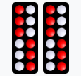 | 天牌 (てんぱい) |
Teen(ティーン) | 12 | 紅6点、白6点。 天を象徴する二十四節気をあらわす。文牌でもっとも位が高い。 |
| 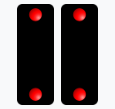 | 地牌 (じぱい) |
Day(デイ) | 2 | 紅2点。 大地の東南西北4方位を象徵する。 |
| 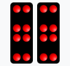 | 人牌 (にんぱい) |
High 8 | 8 | 紅8点。 仁義忠信など人の道徳を象徵する。 |
| 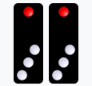 | 和牌、鵝牌 (わぱい、がはい) |
High 4 | 4 | 紅1点、白3点。 八節（春節、元宵、清明、端午、中元、中秋、重陽、冬至）を象徵する。 |
| 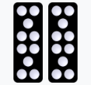 | 梅花、梅牌 (ばいか、ばいはい) |
High 10 | 10 | 白10点。 梅の花を象徵する。 |
| 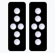 | 長三、長牌、長衫 (ちょうさん、ちょうはい、ちょうしゃん) |
High 6 | 6 | 白6点。 |
| 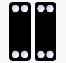 | 板、板凳 (ばん、ばんてん) |
Low 4 | 4 | 白4点。 （背もたれがない）板製の腰掛けに似ていることから |
| 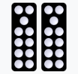 | 斧頭、虎頭 (ふとう、ことう) |
11 | 11 | 白11点。 |
| 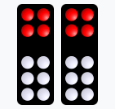 | 紅頭、四六、屏風 (こうとう、しろく、びょうぶ) |
Low 10 | 10 | 紅4点、白6点。 |
| 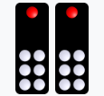 | 高脚七 (こうきゃくしち) |
High 7 | 7 | 紅1点、白6点。 |
| 銅錘、伶冧六 (どうつい、れいりょうりく) |
Low 6 | 6 | 紅1点、白5点。 |
文牌
全32牌中、文牌22枚を除く10種（各1枚）を武牌もしくは武子と呼ぶ。武牌は目の合計によって分類される。| 牌 | 名称 | 英語(English) | 数 | 紹介 |
|---|---|---|---|---|
| 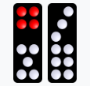 | 雑九 (ざっく) |
9 | 9 | 2種類ある 一つは紅4点白5点、もう一つは白9点。 |
| 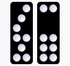 | 雑八 (ざっぱち) |
Low 8 | 8 | 2種類ある 両方とも白8点だが配列が異なる。 |
| 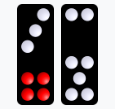 | 雑七 (ざっしち) |
Low 7 | 7 | 2種類ある 一つは紅4点白3点、もう一つは白7点。 |
| 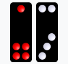 | 雑五 (ざつご) |
5 | 5 | 2種類ある 一つは紅5点、もう一つは白5点。 |
| 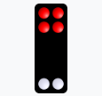 | 二四、高六、大六、大鶏六 (にし、こうろく、だいろく、おおとりろ) |
Gee Joon(ジージュン) | 6(or3) | 至尊牌の一つ。 6としても3としても用いることができるカメレオン牌。 |
| 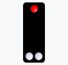 | 丁三、細三、大三、高三、么鶏三 (ていさん、さいさん、だいさん、こうさん、もけいさん) |
Gee Joon(ジージュン) | 3(or6) | 至尊牌の一つ。 3としても6としても用いることができるカメレオン牌。 |
役の順位
役は対牌もしくは対子の二牌からなる。第16位までのペア(pair)の役を、特にボー(BO)と呼ぶ。| 順位 | 組牌 | 名称 | 英語(English) | 紹介 |
|---|---|---|---|---|
| 最高位 | 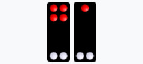 | 至尊宝 (しすんぽう) |
Geen Joon(ジージュン) | 丁三と二四から構成される。 各々では弱い牌だがペアでは最高位である。 |
| 第2位 | 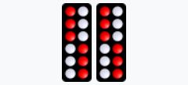 | 双天 (そうてん) |
Teen(ティーン) | 天牌のペア |
| 第3位 | 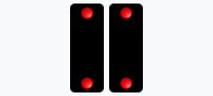 | 双地 (そうち) |
Day(デイ) | 地牌のペア |
| 第4位 | 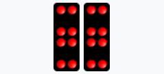 | 双人 (そうにん) |
Yun(ヤン) | 人牌のペア |
| 第5位 | 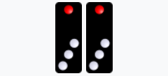 | 双和 (そうわ) |
Gor(ゴー) | 和牌のペア |
| 第6位 | 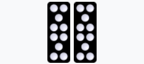 | 双梅 (そうばい) |
Mooy(ムイ) | 梅花牌のペア |
| 第7位 | 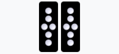 | 双長 (そうちょう) |
Chong(チャン) | 長三牌のペア |
| 第8位 | 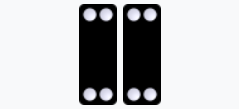 | 双板 (そうばん) |
Bon(バン) | 板牌のペア |
| 第9位 | 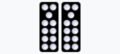 | 双斧 (そうふ) |
Foo(フー) | 斧頭のペア |
| 第10位 | 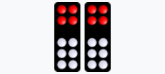 | 双紅頭 (そうこうとう) |
Ping(ピン) | 紅頭牌のペア |
| 第11位 | 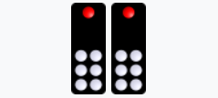 | 双高脚 (そうこうきゃく) |
Tit(ティット) | 高脚七牌のペア |
| 第12位 | 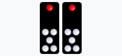 | 双伶冧 (そうれいりょう) |
Look(ルック) | 伶冧六牌のペア |
| 第13位 | 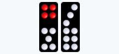 | 雑九 (ざっく) |
Gow(ガウ) | 雑九牌のペア |
| 第14位 | 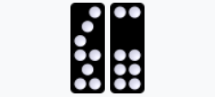 | 雑八 (ざっぱち) |
Bot(バット) | 雑八牌のペア |
| 第15位 | 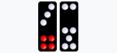 | 雑七 (ざっしち) |
Chit(チット) | 雑七牌のペア |
| 第16位 | 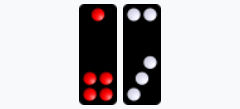 | 雑五 (ざつご) |
Ng(ンー) | 雑五牌のペア |
| 第17位 | 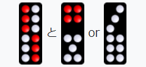 | 王、天王 (おう、てんのう) |
Wong(ウォン) | 天牌とは12と九の組み合わせ |
| 第18位 | 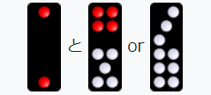 | 王、地王 (おう、じおう) |
Wong(ウォン) | 地牌とは二と九の組み合わせ |
| 第19位 | 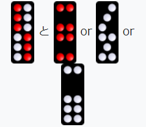 | 槓、天槓 (かん、てんかん) |
Gong(ゴン) | 天槓とは12と八の組み合わせ |
| 第20位 | 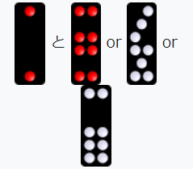 | 槓、地槓 (かん、ちかん) |
Gong(ゴン) | 地槓とは二と八の組み合わせ |
| 第21位 |  |
高九、天高九 (こうきゅう、てんこうきゅう) |
High 9 | 天高九とは12と七の組み合わせ |
| 第22位 | 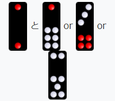 | 高九、地高九 (こうきゅう、じこうきゅう) |
High 9 | 地高九とは二と七の組み合わせ |
-
ボー(Bo) > ウォン(Wong) > ゴン(Gong) > 高九(High 9) > 役無し